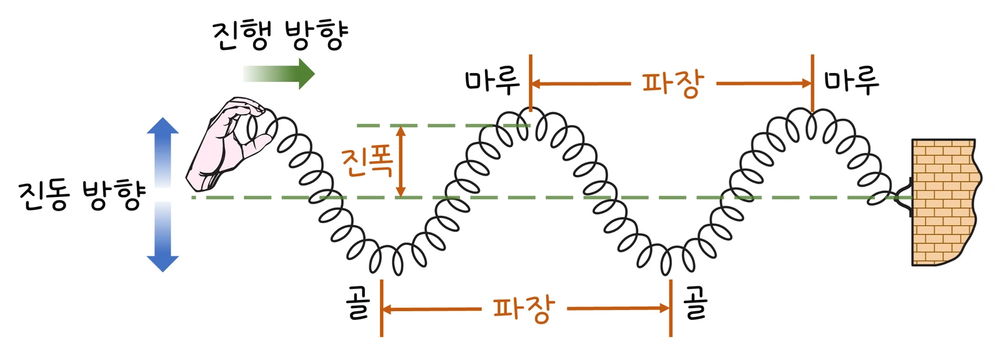
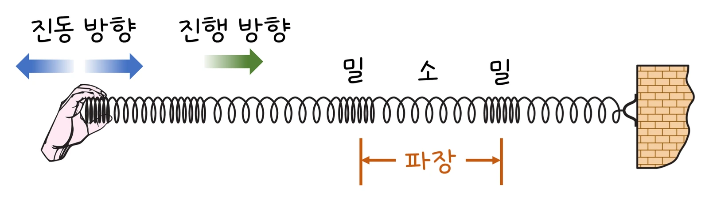

고3 역학과 에너지 · Ⅲ 탄성파와 소리 · 웹툰 13화 「몸속을 보는 소리」
실험에서 공기·물·근육·뼈·강철 등 두 매질을 골라 음향 임피던스 Z = ρv를 구하고, 경계에서 반사 계수 r·에너지 반사율 R·투과율 T와 반사파의 위상을 확인했습니다. 공기 → 물은 99.9 %가 반사되며 위상이 뒤집혔고, 물 → 근육은 거의 투과, 근육 → 뼈는 33 %가 반사되었습니다. 경계면에서의 반사·투과와 초음파 영상의 원리를 정리합니다.
실험 데이터 되짚기
수직 입사·평면파·손실 없음. Z 단위 kg/m²s: 공기 415, 물 1.48 × 10⁶, 근육 1.6 × 10⁶, 뼈 6 × 10⁶, 강철 4.6 × 10⁷.
| 경계 (1 → 2) | r (변위) | 에너지 반사율 R | 투과율 T | 반사파 위상 | 의미 |
|---|---|---|---|---|---|
| 공기 → 물 | −0.9994 | 99.9 % | 0.1 % | 뒤집힘 (고정단) | 물속에서 밖의 소리가 거의 안 들림 |
| 물 → 공기 | +0.9994 | 99.9 % | 0.1 % | 그대로 (자유단) | R은 같고 위상만 다름 |
| 물 → 근육 | −0.04 | 0.15 % | 99.85 % | 뒤집힘 | 젤을 바르면 거의 투과 |
| 근육 → 뼈 | −0.58 | 33.5 % | 66.5 % | 뒤집힘 | 초음파에서 뼈가 밝게 |
| 물 → 강철 | −0.94 | 88 % | 12 % | 뒤집힘 | 수중 음파 탐지 |
Z가 비슷하면 대부분 투과, 크게 다르면 대부분 반사. 어느 쪽에서 들어가든 R은 같고, 더 단단한 매질로 갈 때(r < 0)만 위상이 180° 뒤집힙니다. 압력파 기준 반사 계수는 부호가 반대입니다.
매질이 진동하는 방향과 파동이 나아가는 방향이 같으면 종파, 수직이면 횡파이고 소리는 공기 속 종파. v = fλ — 340 Hz 소리는 공기(340 m/s)에서 파장 1 m. 소리 속력은 공기 약 340 < 물 약 1 500 < 강철 5 000 m/s 이상(단단하고 탄성이 큰 매질일수록). 파동이 다른 매질로 넘어갈 때 진동수는 그대로, 속력과 파장이 바뀌며 경계에서 일부는 반사, 일부는 투과합니다. 얼마나 나뉘는지는 두 매질의 음향 임피던스 Z = ρv의 차이가 정합니다: 수직 입사에서 (변위) 진폭 반사 계수 r = (Z₁ − Z₂)/(Z₁ + Z₂), 에너지 반사율 R = r², 투과율 T = 1 − R = 4Z₁Z₂/(Z₁ + Z₂)². 예측 게임 — 벽에 고정된 용수철 끝에서 반사되는 펄스는? 뭉치 ‘위로 볼록 그대로’, 제로 ‘벽이 반대로 당기니 뒤집혀서’: 고정단 반사는 위상이 반대, 자유단(고리) 반사는 그대로 — 이 위상 변화가 정상파(12 실험실)와 간섭에서 중요합니다.
교재 그림
횡파와 종파 — 용수철로 보기


위: 손을 위아래로 흔들면 진동 방향이 진행 방향에 수직인 횡파. 아래: 앞뒤로 밀고 당기면 진동 방향과 진행 방향이 나란한 종파 — 소리는 공기 속 종파라 밀·소가 퍼져 나갑니다.
움직여 보기
경계에 닿은 펄스 — 얼마나 되돌아오고, 뒤집힐까?
Z가 큰 매질로 가면(r < 0) 반사 펄스가 뒤집혀 돌아오고, 작은 매질로 가면 그대로 돌아옵니다. 공기 ↔ 물은 어느 쪽이든 에너지의 99.9 %가 반사됩니다 — 물 → 공기에서 넘어간 펄스는 변위가 커 보여도 공기의 Z가 아주 작아 실어 가는 에너지는 0.1 %뿐입니다. (수직 입사, 손실 없음, 그래프는 변위, 매질 속력 차이는 그림에서 줄여 나타냄)
초음파 영상은 조직 경계마다 반사된 에코의 세기와 시간으로 영상을 만듭니다: 조직 속 속력 약 1 500 m/s, 반사파가 0.0001 s 만에 돌아오면 왕복 0.15 m → 경계까지 약 7.5 cm. 탐촉자에 젤을 바르는 까닭은 공기층이 있으면(공기 → 피부 R ≈ 99.9 %) 대부분 반사되어 버리기 때문입니다. 근육 → 뼈는 33 %가 반사되어 뼈가 밝게 보입니다. 비파괴 검사는 다리·비행기 부품 속 균열에서 반사되는 초음파를 찾고, 어군 탐지기·수심 측정은 반사 시간을 씁니다. 지진파: 종파 P파는 고체·액체를 모두 지나고 횡파 S파는 액체를 지나지 못해 지구 외핵이 액체임을 알아냈으며, 맨틀–핵 경계의 반사·굴절로 내부 구조를 그렸습니다. 콘서트홀 벽의 재질 선택도 임피던스 원리입니다.
움직여 보기
초음파 영상의 원리 — 메아리가 돌아오는 시간으로 깊이를 잰다
깊이 = 왕복 시간 × 1 500 ÷ 2. 7.5 cm면 0.15 m를 왕복해 100 μs 뒤에 메아리가 옵니다. 근육 → 뼈는 33.5 %가 반사되어 뼈가 밝게 보입니다. ‘젤 없음’을 누르면 공기층에서 99.9 %가 바로 튕겨 나와 뼈의 메아리는 사라집니다. (평면파·수직 입사, 근육 속 1 500 m/s, 그림은 1초에 100 μs가 가도록 느리게)
수직 입사·평면파·손실 없음 조건입니다. 비스듬히 들어가면 굴절과 각도 의존 반사가 생기고(스넬 법칙), 실제 매질은 흡수로 에너지가 줄어듭니다. 밀도·속력은 대표값이며 조직·재료마다 편차가 있고 온도·주파수에 따라 속력이 변합니다. 경계층 두께가 파장과 비슷하면 간섭으로 반사율이 달라집니다 — 초음파 젤을 바르는 또 다른 이유이며, 안경 무반사 코팅과 같은 원리입니다. 기찻길에 귀를 대면 기차 소리가 먼저 들리는 것은 강철 속 속력이 빠르기 때문입니다.
공기 415 · 물 1.48 × 10⁶ · 근육 1.6 × 10⁶ · 뼈 6 × 10⁶ · 강철 4.6 × 10⁷ kg/m²s · r < 0 ⇒ 위상 반전 · 초음파 왕복 시간 × 1 500 ÷ 2 = 깊이
“13라운드! 벽에서 반사되어 돌아오는 펄스는 어떤 모양일까? 난 위로 볼록한 그대로.” “끝이 고정돼 있으면 용수철이 벽을 위로 당길 때 벽이 반대로 아래로 당기잖아. 뒤집혀서 아래로 볼록하게 돌아올 거야!”
웹툰 13화 · 고정단은 뒤집히고, 고리로 건 자유단은 그대로 — 제로 7 : 6 뭉치
“초음파는 몸속에서 조직과 조직의 경계를 만날 때마다 일부가 반사돼. 반사파가 돌아오는 데 걸린 시간으로 경계까지의 거리를 계산해 영상을 만들지.” “탐촉자에 젤을 바르는 건 공기층이 있으면 대부분 반사돼 버려서겠네.”
웹툰 13화 · 0.0001 s 왕복 → 약 7.5 cm; P파는 액체를 지나고 S파는 못 지난다
Z_지방 = 950 × 1 450 = 1.38 × 10⁶. r = (1.48 − 1.38)/(1.48 + 1.38) = 0.035 → R = 0.12 %. 거의 다 투과하므로 지방과 물(체액)의 경계는 영상에서 어둡게, 뼈 경계(33 %)는 밝게 보입니다.
깊이 = 1 500 × 0.00016 ÷ 2 = 12 cm. 공기층이 끼면 피부 경계에서 99.9 %가 반사되어 몸속으로 들어가는 에너지가 0.1 %뿐 → 영상이 거의 안 나옵니다.